★Why DJ Tech ADK
To build an Arduino project, we usually use a breadboard, modules and many jumper wires. For example, a clock on an OLED display needs many wires between the Arduino, the RTC (clock) module and the display.
Many wires make the circuit messy, and loose breadboard contacts cause errors. The DJ Tech ADK avoids this: the modules plug straight into the board, so you get your output quickly.
Special features
- Works with both Arduino Uno and Arduino Nano.
- Programmable switches with 4 different logic outputs.
- Each voltage has its own colour of pins, for easy reference.
- The Arduino board's own power can drive small modules such as LCD, OLED and RTC.
- For bigger loads such as motors, an external supply through regulator ICs gives up to 1 A.
- Works with advanced sensor and display modules.
- 15 V / 1 A power adapter included for the external supply.
- A 3 mm acrylic sheet under the board protects it.
- The Multi-Link terminal lets you connect other parts too.
⇄Dual board support
This is a combo development board: you can use either an Arduino Uno or an Arduino Nano on it.
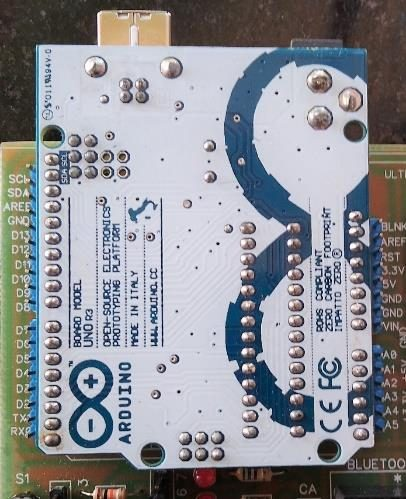
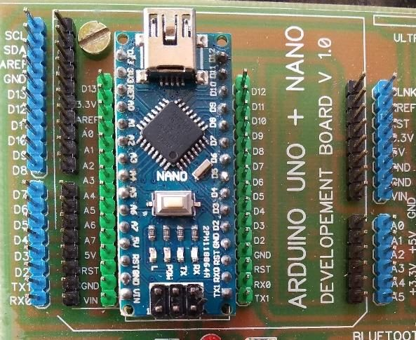
1Arduino Uno
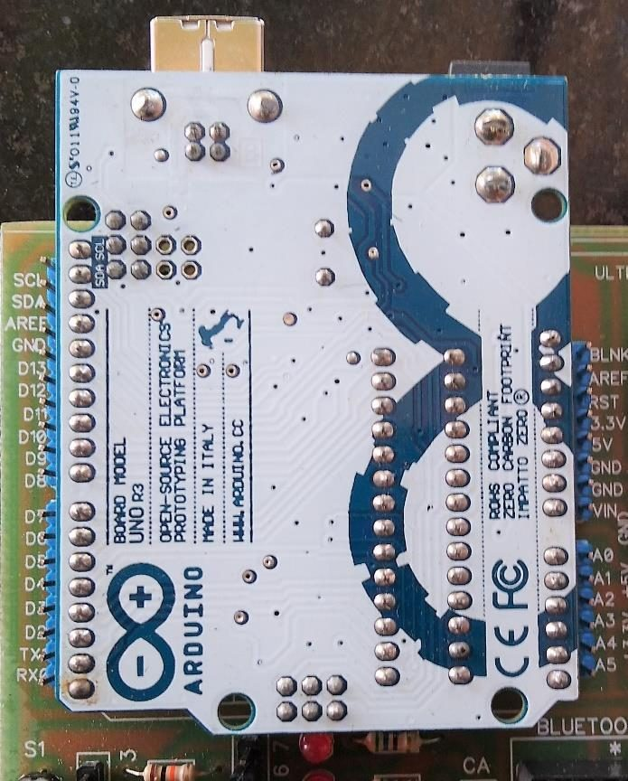
Place the Uno board upside down on the black male header pins. The blue header pins then work as the Uno's input and output pins.
- 14 digital input/output pins, 6 analog inputs, 6 PWM (pulse width modulation) outputs.
- Built with a DIP (Dual In-line Package) chip.
2Arduino Nano
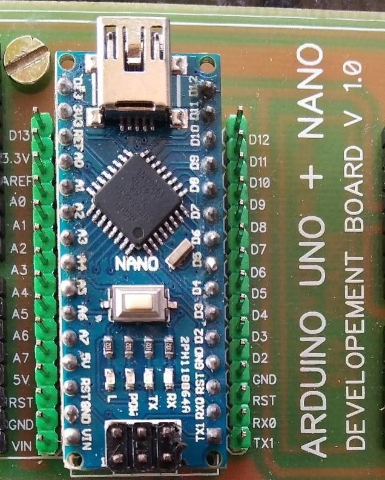
Place the Nano board straight (pins down) in the black female headers. The green header pins then work as the Nano's input and output pins.
- 22 input/output pins (14 digital + 8 analog), 6 PWM outputs.
- Built with an SMD (Surface Mount Device) chip.
3Programmable switches
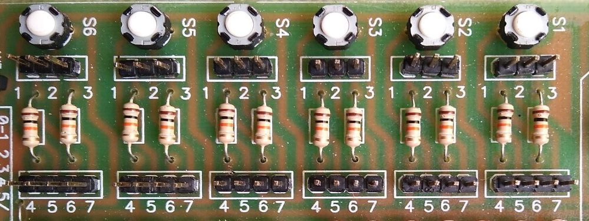
Each switch (S1 to S6) has jumper pins numbered 1 to 7. Pin 7 is the output. By placing jumpers you choose one of 4 logic outputs:
| Output you want | Jumper setting |
|---|---|
| HIGH when pressed | Connect pin 5 to 5 V (red pin). Pressed: pin 7 goes HIGH. Released: pin 7 floats. |
| LOW when pressed | Connect pin 5 to 0 V (black pin). Pressed: pin 7 goes LOW. Released: pin 7 floats. |
| LOW → HIGH when pressed | Jumpers on 2–3 and 4–5. |
| HIGH → LOW when pressed | Jumpers on 2–3 and 5–6. |
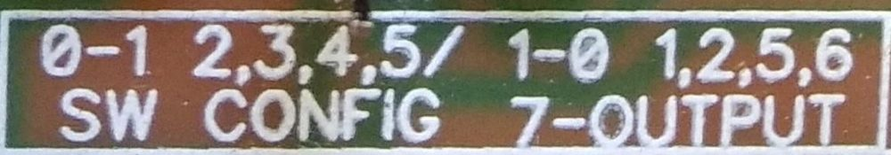
4LED arrays: common anode and common cathode
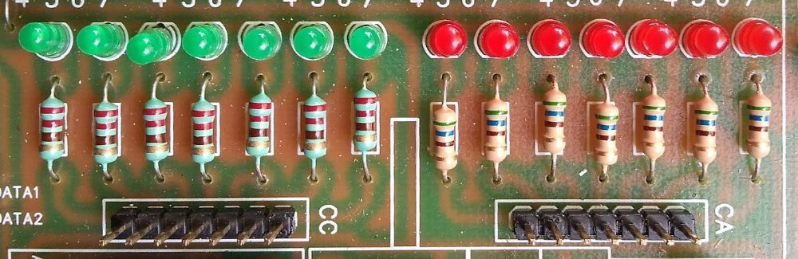
Two sets of 7 LEDs are used as outputs, for example as indicators:
- CC: Common Cathode set.
- CA: Common Anode set.
5433 MHz radio transmitter and receiver
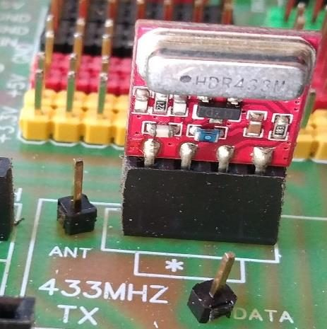
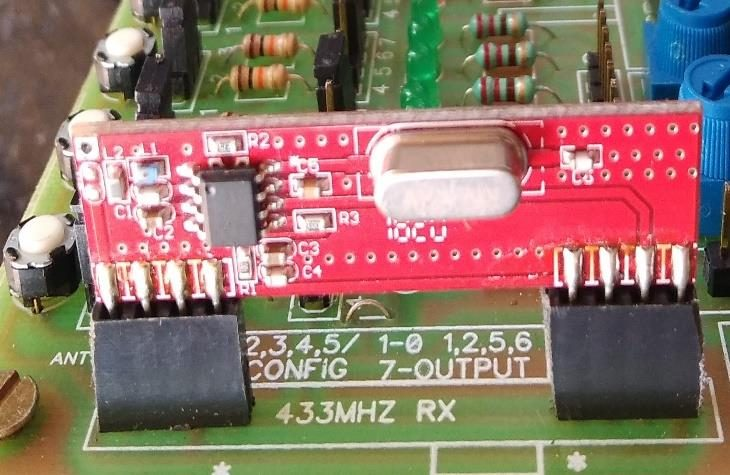
These modules work at 433 MHz and let two Arduinos talk to each other. Data sent by the TX module is received by the RX module and given to the Arduino's I/O pin.
6Membrane keypads (1x4, 3x4 and 4x4)
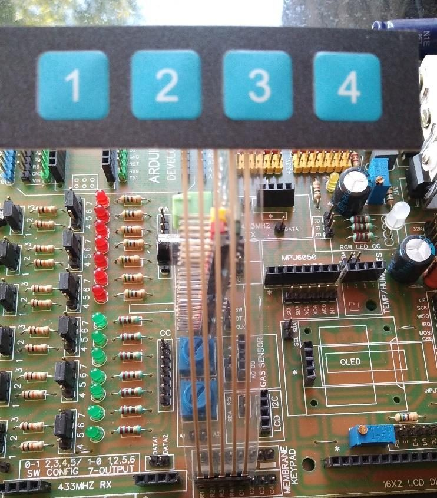
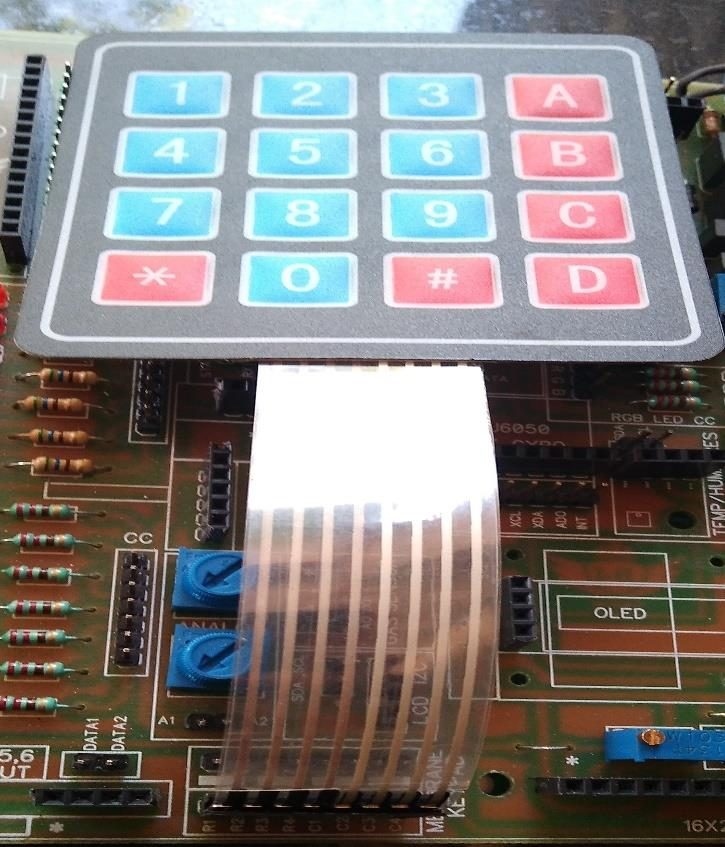
A membrane keypad is used to type numbers and symbols into the Arduino. It is a matrix of rows and columns of keys. The 1x4 (4 keys), 3x4 (12 keys) and 4x4 (16 keys) keypads can all be connected to the ADK.
7Analog presets
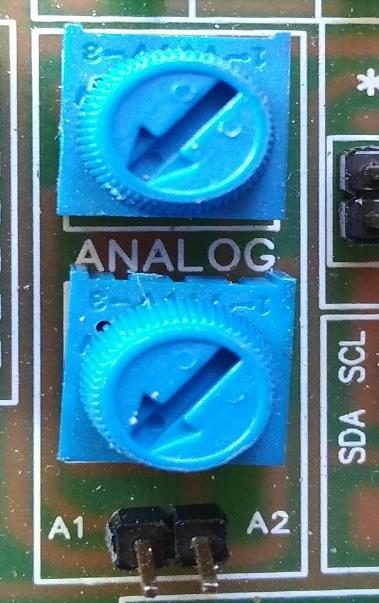
A preset gives an analog voltage (0–5 V) instead of only HIGH or LOW. Each preset feeds its own analog input pin (A1 and A2).
The presets have a knob, so you can turn them by hand without a screwdriver. The arrow on the knob shows its position.
8Rotary encoder with push button
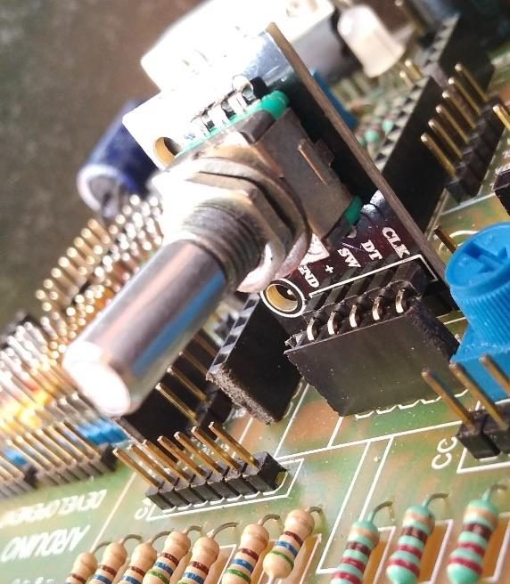
The rotary encoder works as a 3-way input: 1. turn clockwise, 2. turn anti-clockwise, 3. push the centre. The Arduino reads the pulses from the encoder and acts on them.
Example: scroll and select in a menu on a display.
9HC-05 Bluetooth
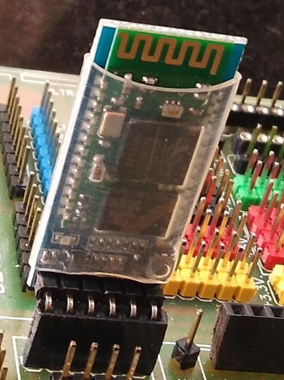
The HC-05 Bluetooth module sets up wireless communication with the Arduino. It can be set as master or slave. It talks to the Arduino through UART (serial: TX and RX).
10SD card module
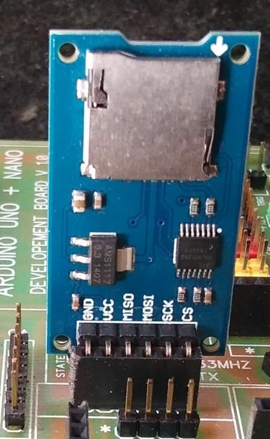
Stores data from the Arduino on a micro SD card, for example a data logger, GPS logger or temperature logger. It can also be used to play sound notes from the SD card.
11Gas sensor module
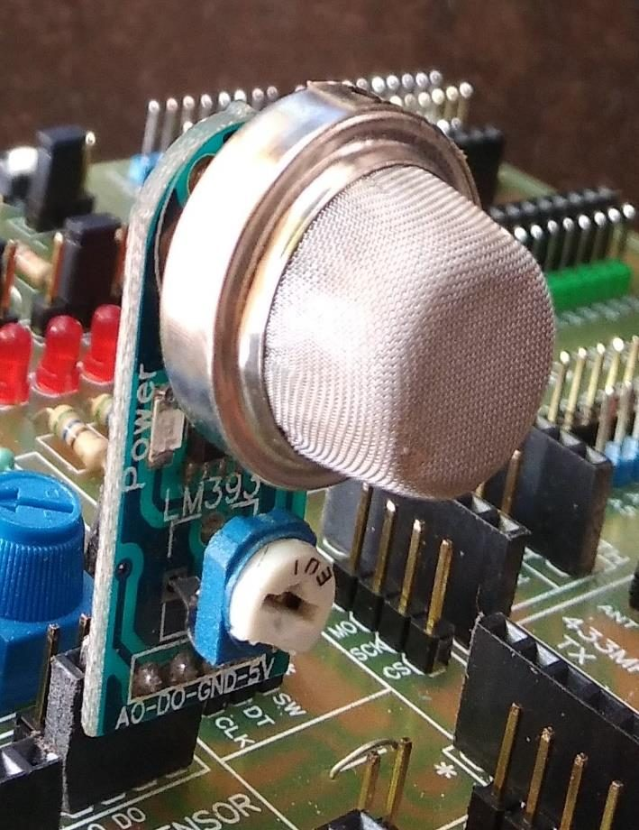
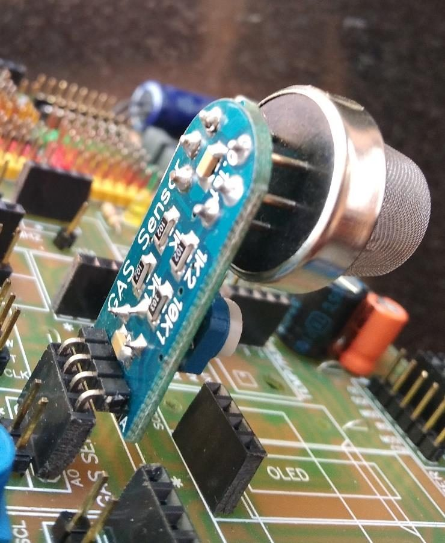
A gas sensor such as the MQ-2 detects smoke and flammable gases such as LPG and methane. Its resistance changes with the gas, so the Arduino can raise an alarm when the gas level is high.
1216x2 LCD in I2C mode
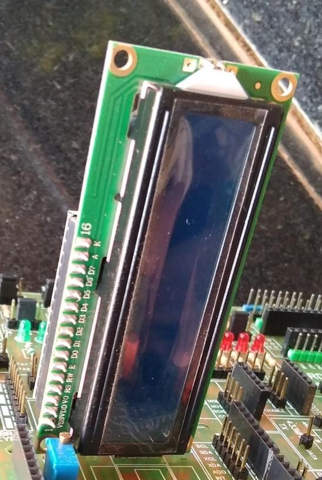
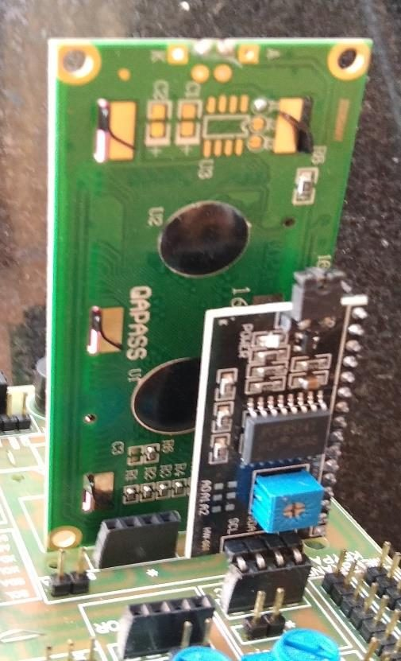
A 16x2 LCD shows 16 characters on 2 lines: letters, numbers and some custom characters. With the I2C module on its back, it needs only 2 signal wires (SDA and SCL), so the connection is simple.
13MPU6050 accelerometer and gyroscope
A 6-axis motion sensor in one chip: a 3-axis gyroscope, a 3-axis accelerometer, a digital motion processor and a temperature sensor.
14BMP180 barometric pressure sensor
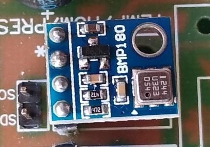
Measures air pressure, temperature and altitude with high accuracy.
15RGB LED
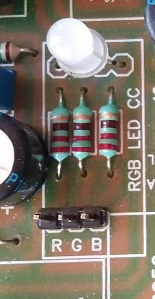
A common cathode RGB LED with Red, Green and Blue. By changing the voltage (PWM) on R, G and B, you can mix many colours.
16OLED displays
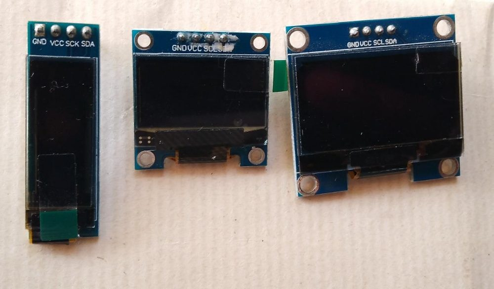
OLED means Organic Light Emitting Diode. Each dot gives its own light, so there is no backlight and black looks really black. OLEDs are smaller and lighter than LCDs. Each dot (pixel) can be switched on or off, so you can show text and pictures of any shape.
| Display | Pixels |
|---|---|
| 16. 1.3 inch | 128 x 64 = 8192 pixels |
| 17. 0.96 inch | 128 x 64 = 8192 pixels (driver SSD1306) |
| 18. 0.91 inch | 128 x 32 = 4096 pixels (driver SSD1306) |
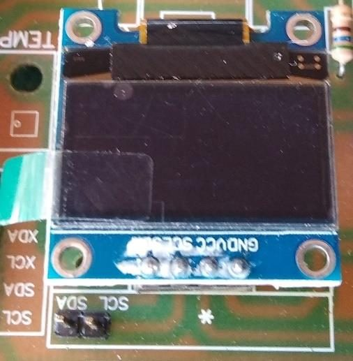
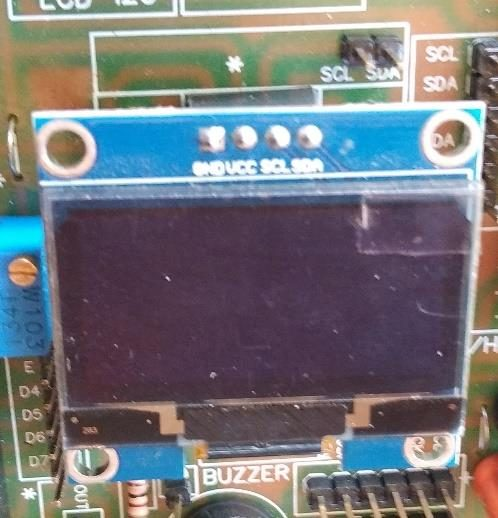
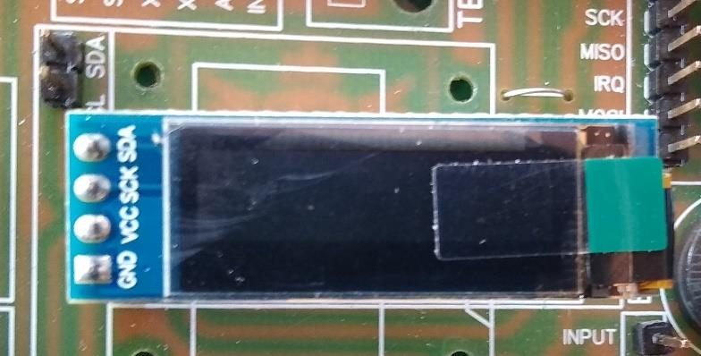
19NRF24L01 2.4 GHz radio
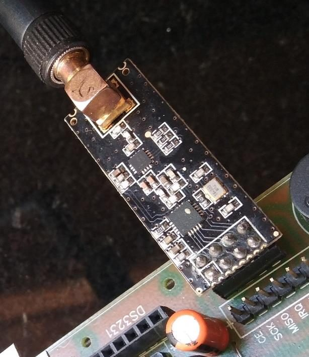
A wireless transceiver (send and receive) for the 2.4 GHz band, made for very low power use. It talks to the Arduino through SPI.
- Data speed up to 2 Mbps.
- 125 channels, so up to 125 separate networks can work in one place.
- Each channel has up to 6 addresses, so it can talk with 6 other devices at the same time.
- Range up to about 100 metres.
20DS3231 real-time clock (RTC)
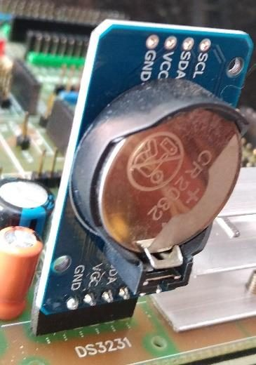
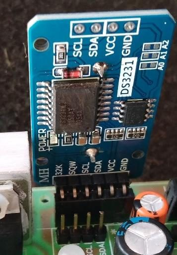
The DS3231 is a very accurate, low-cost clock chip that talks over I2C. It has a built-in temperature-compensated crystal (TCXO).
- A battery keeps the time when the power is off.
- Counts seconds, minutes, hours, day, date, month and year. Short months and leap years are corrected automatically.
- 24-hour or 12-hour mode (with AM/PM).
- Two programmable alarms and a programmable square-wave output.
21Buzzer
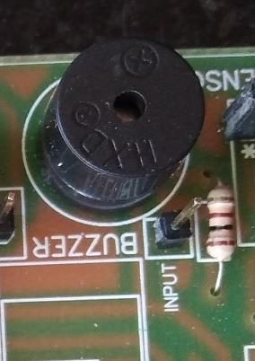
An electric buzzer gives a sound signal as an Arduino output. It makes sound in the 1 to 7 kHz range.
22PIR sensor (Passive Infrared)
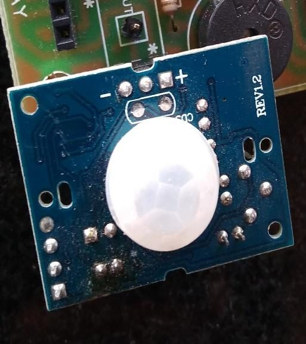
A PIR sensor detects the heat (infrared) given off by people and animals, so it can sense movement.
- Output HIGH: movement found.
- Output LOW: no movement.
2316x2 LCD in parallel mode
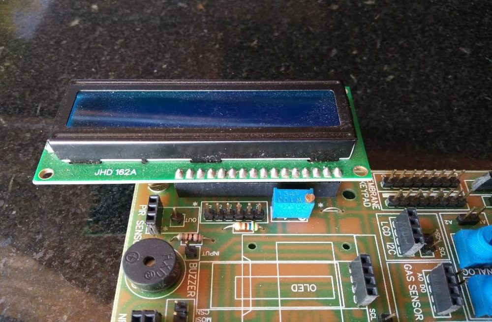
The same 16x2 LCD (16 characters, 2 lines) can also be connected directly, without the I2C module. It has 16 pins; in 4-bit mode only 12 are used (D0–D3 are not needed).
A 10 kΩ preset on the board adjusts the text contrast.
24TM1637 4-digit 7-segment display
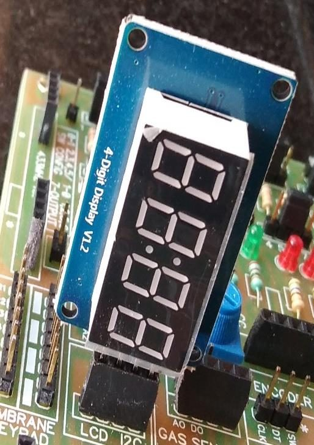
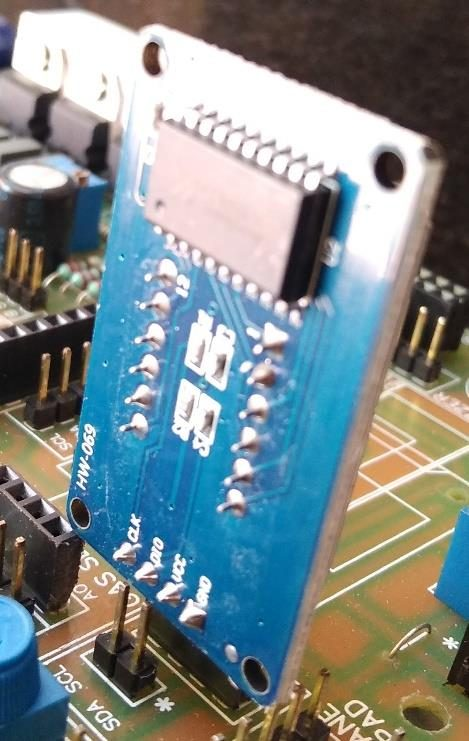
A 4-digit 7-segment display normally needs at least 12 pins, which is most of an Arduino's pins. This module has a TM1637 driver chip, so it needs only 2 signal wires (CLK and DIO).
Use it to build a clock, counter, stopwatch, timer and more.
25Multi-Link connector
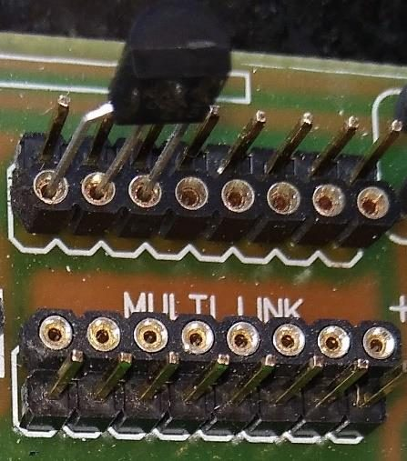
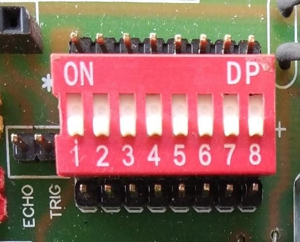
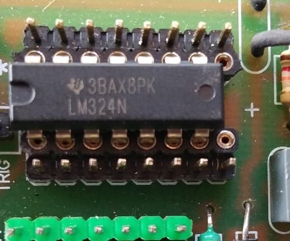
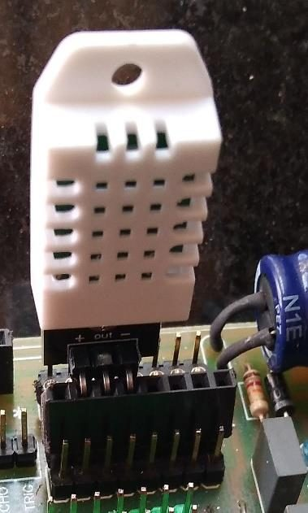
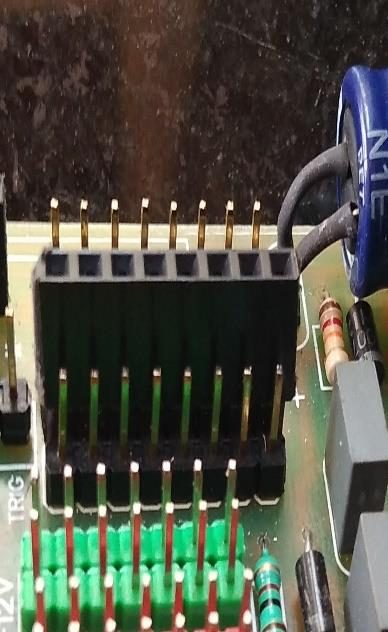
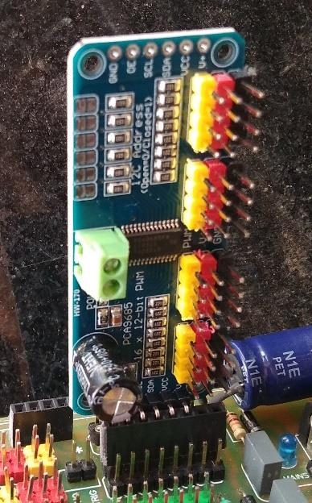
Multi-Link is a special connector where other parts and even modules can be plugged in easily. For example: the LM35 temperature sensor, the 78L05 regulator, a humidity module, a DIP switch, and ICs such as the LM324.
26HC-SR04 ultrasonic sensor
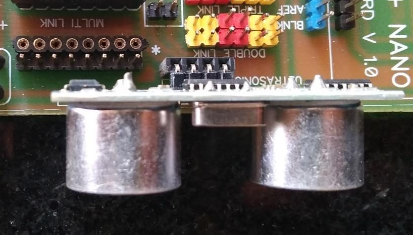
Measures the distance to an object, from 2 cm to 400 cm, using sound echo (like SONAR).
- Give a pulse of 10 µs or more on the TRIG pin. The module sends 8 sound pulses at 40 kHz.
- The ECHO pin then goes HIGH and stays HIGH until the echo comes back.
- The HIGH time is the time for the sound to go to the object and back. From this time and the speed of sound, the Arduino works out the distance.
27Double and triple links
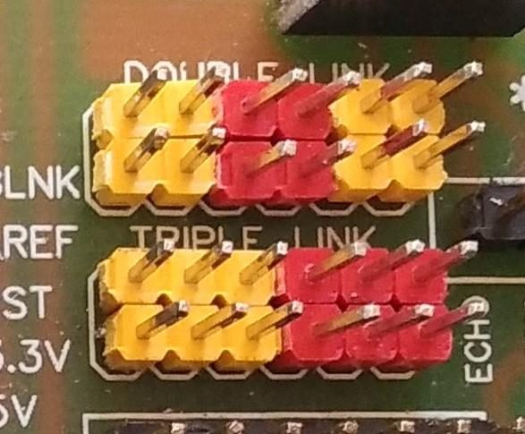
These pins work as joints when wiring a project. Connect an Arduino output to a double or triple link, then from the link to several modules or sensors.
28On-board power pins (internal)
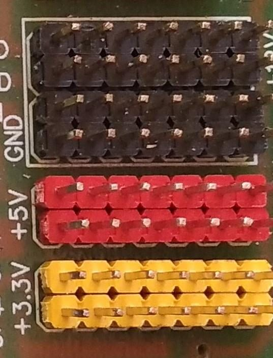
These pins take their power from the Arduino Uno or Nano. Each voltage has its own colour:
| Colour | Voltage |
|---|---|
| Black | GND (negative, 0 V) |
| Red | +5 V |
| Yellow | +3.3 V |
GND is common to both the internal and the external power supply.
29External power pins
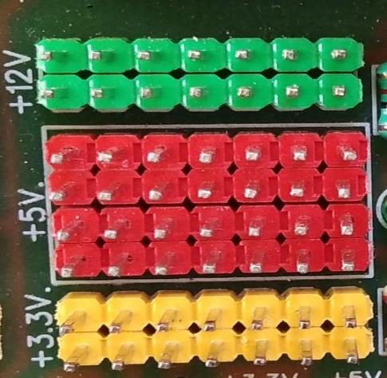
The Arduino's own power is enough for small modules. For loads that need more current, such as motors and solenoid coils, use the external supply (up to 1 A) from the 15 V adapter:
| Colour | Voltage |
|---|---|
| Green | +12 V |
| Red | +5 V |
| Yellow | +3.3 V |
30Power LED indicators
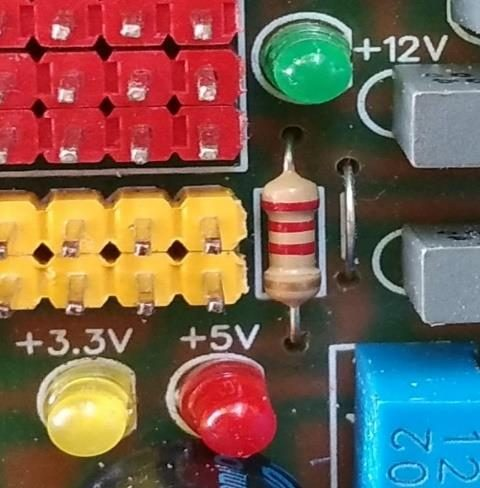
Each power LED shows whether that voltage is present:
| LED | Meaning |
|---|---|
| Blue | +15 V from the external adapter |
| Green | +12 V |
| Red | +5 V |
| Yellow | +3.3 V |
!Important notes
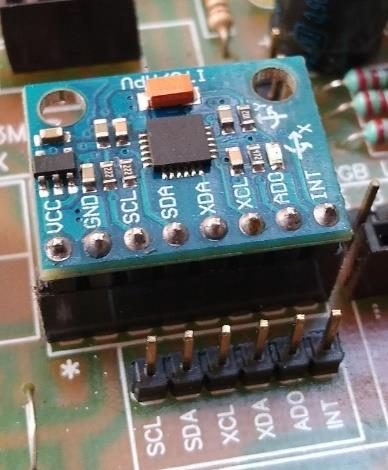